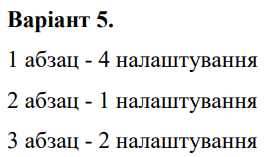
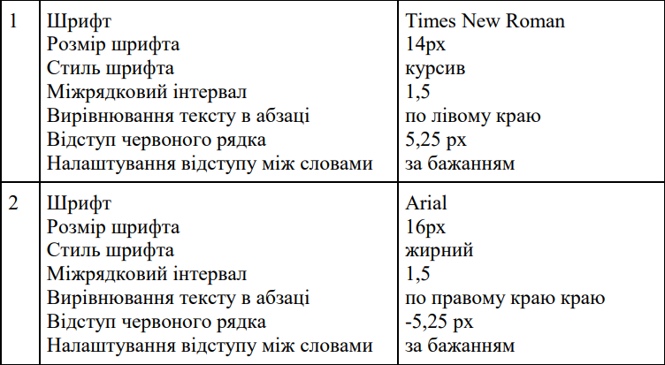
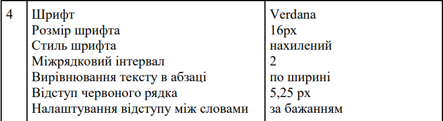

Лабораторна робота 1 студентки 1 курсу групи "Математика" Кубищенко Катерини Яковлівни
звіт до лабораторної роботи №4. Тема - CSS стилі. Павила підключення. Селектори стилів.
Приклад з таблиці 4.1
Приклади з таблиці 4.2
grey background-pink header/content
grey background-pink header/content-white menu
звіт до лабораторної роботи №5. Тема - CSS стилі. Стилі блоку.
звіт до лабораторної роботи №6. Тема - CSS стилі. Стилі тексту і шрифта.
Умова індивідуальної задачі
Налаштування
 Розв'язок Індивідуальної задачі